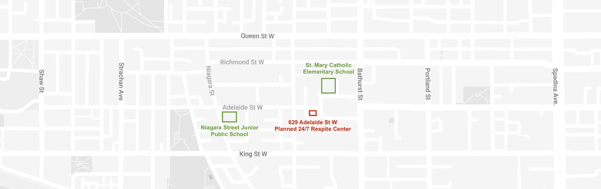
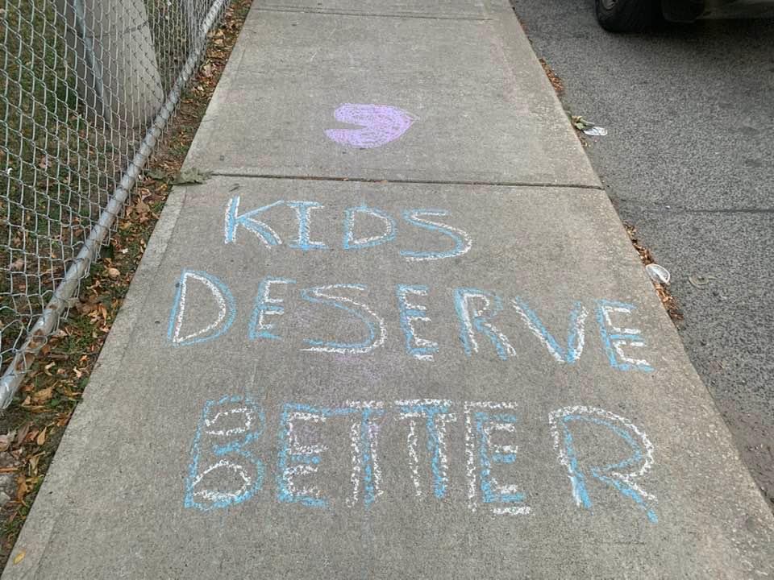

Key Concerns
- The close proximity of the respite site to two elementary schools.
- The significant impact to public safety in our community.
- The location of the proposed respite site in a densely-populated residential neighbourhood.
- The City of Toronto’s lack of process, transparency, and proactive public consultation with the community.
In the News
- CityNews Oct 20, 2023 Residents concerned over location of new respite site in West Queen West
- Toronto Sun Oct 20, 2023 VUONG: Toronto is in dire need of a dose of common sense
- CBC Oct 18, 2023 Toronto's newly planned respite centre faces opposition as city faces desperate need for shelters

Q&A with Respite Center Workers About New Site
These were the answers we got from people directly working at local 24/7 respite centers and having actual experience on the ground.
Question: The city is planning on putting a 24-hour respite like yours in our neighbourhood, which is also right by an elementary school. About 100 meters away. From your experience, do you think that’s safe? I’m just curious what you think?
Worker: Oh wow. That’s not good. The kids shouldn’t be so close and see this - there are also many different personalities to deal with. It’s not safe. And It’s not right for the kids.
Question: Ok, so, is it safe for the residents? My house for example is merely 10 meters away - just across the street (showed them a photo on my phone).
Worker: No, I don’t think so. You definitely can’t leave anything outside, and there’s needles that can be found. It's dangerous, it’s not safe, it spreads disease. We also have an area in the back that’s fenced off for the residents to be outside...it doesn’t look like there’s one in your photos?
Reply: No, there isn’t one...it's open and directly across the street...
Question: Are there a lot of drug users that come to the respite? I’m just curious about who accesses this respite?
Worker: It's a mix...drug users, refugees, all kinds...it depends.
Question: OK, well, how do you find your 24-hour respite then? Safe?
Worker: Overall yes. There’s some occurrences for sure...but it’s fairly controlled as they have to go through the central intake system. So that helps a lot keeping it a controlled environment, check ins, and responsibilities to being back at certain times.
Question: But with our respite, they are bypassing that, they don’t have to go through the central intake system...
Worker: Oh wow. That’s definitely not good - because it’s not controlled - it’s much more unsafe than ours. Did the city not speak to you before doing this? They should talk to the community members. And there’s a school?
Reply: You’d think so but, there was absolutely no communication, at all. We heard a rumor and had to start digging around and emailing to even find out?
Worker: That doesn’t seem right...